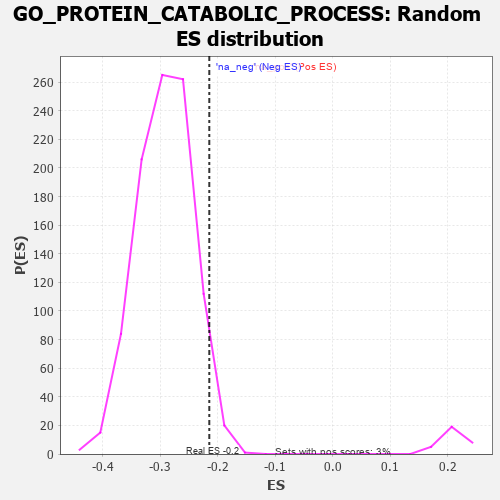

| | | Dataset | 7d |
| Phenotype | NoPhenotypeAvailable |
| Upregulated in class | na_neg |
| GeneSet | GO_PROTEIN_CATABOLIC_PROCESS |
| Enrichment Score (ES) | -0.21452759 |
| Normalized Enrichment Score (NES) | -0.7342278 |
| Nominal p-value | 0.9597107 |
| FDR q-value | 1.0 |
| FWER p-Value | 1.0 |
Table: GSEA Results Summary
 Fig 1: Enrichment plot: GO_PROTEIN_CATABOLIC_PROCESS
Fig 1: Enrichment plot: GO_PROTEIN_CATABOLIC_PROCESS
Profile of the Running ES Score & Positions of GeneSet Members on the Rank Ordered List
| PROBE | GENE SYMBOL | GENE_TITLE | RANK IN GENE LIST | RANK METRIC SCORE | RUNNING ES | CORE ENRICHMENT | | 1 | UBE2K | | | 94 | 1.739 | 0.0042 | No |
| 2 | TRIM2 | | | 100 | 1.628 | 0.0189 | No |
| 3 | DESI1 | | | 138 | 1.332 | 0.0267 | No |
| 4 | AXIN1 | | | 166 | 1.159 | 0.0342 | No |
| 5 | BUB3 | | | 172 | 1.143 | 0.0443 | No |
| 6 | SPSB4 | | | 214 | 1.019 | 0.0486 | No |
| 7 | DCST1 | | | 237 | 0.959 | 0.0548 | No |
| 8 | NSF | | | 243 | 0.947 | 0.0631 | No |
| 9 | JKAMP | | | 310 | 0.804 | 0.0621 | No |
| 10 | CLN5 | | | 346 | 0.751 | 0.0647 | No |
| 11 | GSK3A | | | 351 | 0.745 | 0.0712 | No |
| 12 | SUFU | | | 443 | 0.665 | 0.0657 | No |
| 13 | LRP1 | | | 470 | 0.648 | 0.0684 | No |
| 14 | CDC20 | | | 480 | 0.644 | 0.0733 | No |
| 15 | SPSB1 | | | 494 | 0.631 | 0.0776 | No |
| 16 | GET4 | | | 520 | 0.623 | 0.0803 | No |
| 17 | HTRA2 | | | 527 | 0.621 | 0.0853 | No |
| 18 | CCNB1 | | | 581 | 0.601 | 0.0842 | No |
| 19 | FBXW8 | | | 601 | 0.594 | 0.0873 | No |
| 20 | NEMF | | | 620 | 0.589 | 0.0905 | No |
| 21 | GLMN | | | 632 | 0.583 | 0.0946 | No |
| 22 | FAF2 | | | 680 | 0.566 | 0.0939 | No |
| 23 | NOTUM | | | 726 | 0.553 | 0.0933 | No |
| 24 | SF3B3 | | | 729 | 0.552 | 0.0982 | No |
| 25 | CLN8 | | | 769 | 0.539 | 0.0982 | No |
| 26 | UCHL3 | | | 785 | 0.536 | 0.1014 | No |
| 27 | NRDC | | | 845 | 0.521 | 0.0986 | No |
| 28 | AMFR | | | 856 | 0.518 | 0.1022 | No |
| 29 | TMTC3 | | | 903 | 0.506 | 0.1011 | No |
| 30 | ADRM1 | | | 948 | 0.496 | 0.1000 | No |
| 31 | AKT1 | | | 1040 | 0.476 | 0.0928 | No |
| 32 | TAF9 | | | 1046 | 0.475 | 0.0966 | No |
| 33 | NTAN1 | | | 1120 | 0.459 | 0.0915 | No |
| 34 | PSMD7 | | | 1152 | 0.454 | 0.0918 | No |
| 35 | PSMD2 | | | 1181 | 0.450 | 0.0924 | No |
| 36 | KCTD6 | | | 1213 | 0.444 | 0.0926 | No |
| 37 | UTP25 | | | 1319 | 0.425 | 0.0830 | No |
| 38 | RNF11 | | | 1330 | 0.423 | 0.0857 | No |
| 39 | UBR2 | | | 1334 | 0.423 | 0.0893 | No |
| 40 | RBX1 | | | 1445 | 0.401 | 0.0789 | No |
| 41 | TIMP2 | | | 1478 | 0.394 | 0.0784 | No |
| 42 | SCO1 | | | 1536 | 0.385 | 0.0747 | No |
| 43 | SOCS6 | | | 1560 | 0.381 | 0.0753 | No |
| 44 | CDC27 | | | 1585 | 0.377 | 0.0758 | No |
| 45 | RNF6 | | | 1605 | 0.373 | 0.0768 | No |
| 46 | N4BP1 | | | 1622 | 0.370 | 0.0783 | No |
| 47 | DERL2 | | | 1632 | 0.368 | 0.0806 | No |
| 48 | DDB1 | | | 1642 | 0.366 | 0.0829 | No |
| 49 | ELOC | | | 1685 | 0.359 | 0.0808 | No |
| 50 | ERCC8 | | | 1699 | 0.357 | 0.0825 | No |
| 51 | ZNRF1 | | | 1709 | 0.355 | 0.0847 | No |
| 52 | PSMD4 | | | 1811 | 0.335 | 0.0748 | No |
| 53 | FMR1 | | | 1816 | 0.334 | 0.0774 | No |
| 54 | AP2S1 | | | 1846 | 0.329 | 0.0768 | No |
| 55 | PSMD6 | | | 1858 | 0.326 | 0.0784 | No |
| 56 | CUL3 | | | 1893 | 0.321 | 0.0771 | No |
| 57 | CUL5 | | | 1947 | 0.314 | 0.0732 | No |
| 58 | ARMC8 | | | 1961 | 0.312 | 0.0744 | No |
| 59 | BRSK2 | | | 1979 | 0.308 | 0.0751 | No |
| 60 | UBXN6 | | | 2021 | 0.302 | 0.0727 | No |
| 61 | VPS25 | | | 2033 | 0.300 | 0.0741 | No |
| 62 | TMUB2 | | | 2070 | 0.295 | 0.0722 | No |
| 63 | USE1 | | | 2079 | 0.294 | 0.0739 | No |
| 64 | UBA6 | | | 2114 | 0.289 | 0.0723 | No |
| 65 | SNF8 | | | 2119 | 0.288 | 0.0745 | No |
| 66 | PSME4 | | | 2143 | 0.285 | 0.0742 | No |
| 67 | DTL | | | 2154 | 0.284 | 0.0756 | No |
| 68 | CNOT4 | | | 2161 | 0.283 | 0.0775 | No |
| 69 | UBE2A | | | 2183 | 0.278 | 0.0774 | No |
| 70 | HM13 | | | 2205 | 0.276 | 0.0773 | No |
| 71 | MYLIP | | | 2225 | 0.272 | 0.0774 | No |
| 72 | CDK2 | | | 2226 | 0.272 | 0.0799 | No |
| 73 | PSMF1 | | | 2251 | 0.268 | 0.0794 | No |
| 74 | UBE4B | | | 2313 | 0.258 | 0.0739 | No |
| 75 | TMUB1 | | | 2326 | 0.257 | 0.0748 | No |
| 76 | FAF1 | | | 2340 | 0.255 | 0.0755 | No |
| 77 | HIPK2 | | | 2389 | 0.247 | 0.0716 | No |
| 78 | OMA1 | | | 2408 | 0.244 | 0.0716 | No |
| 79 | UBXN1 | | | 2467 | 0.232 | 0.0663 | No |
| 80 | UBAC2 | | | 2488 | 0.229 | 0.0659 | No |
| 81 | HUWE1 | | | 2506 | 0.225 | 0.0658 | No |
| 82 | MANBA | | | 2514 | 0.225 | 0.0670 | No |
| 83 | NGLY1 | | | 2522 | 0.224 | 0.0682 | No |
| 84 | PSMD5 | | | 2560 | 0.218 | 0.0655 | No |
| 85 | BAG3 | | | 2620 | 0.209 | 0.0598 | No |
| 86 | KAT5 | | | 2644 | 0.206 | 0.0588 | No |
| 87 | VPS4A | | | 2654 | 0.205 | 0.0596 | No |
| 88 | DDI2 | | | 2691 | 0.200 | 0.0568 | No |
| 89 | CUL1 | | | 2735 | 0.193 | 0.0531 | No |
| 90 | CLN6 | | | 2847 | 0.177 | 0.0404 | No |
| 91 | UCHL5 | | | 2864 | 0.172 | 0.0399 | No |
| 92 | CUL2 | | | 2882 | 0.169 | 0.0393 | No |
| 93 | MTM1 | | | 2893 | 0.168 | 0.0396 | No |
| 94 | SOCS4 | | | 2953 | 0.157 | 0.0335 | No |
| 95 | XPO1 | | | 2960 | 0.156 | 0.0342 | No |
| 96 | GID8 | | | 2978 | 0.153 | 0.0334 | No |
| 97 | UBE2S | | | 2980 | 0.153 | 0.0347 | No |
| 98 | AZIN2 | | | 2993 | 0.150 | 0.0346 | No |
| 99 | UFL1 | | | 3041 | 0.144 | 0.0299 | No |
| 100 | BIRC6 | | | 3047 | 0.143 | 0.0306 | No |
| 101 | MAEA | | | 3048 | 0.143 | 0.0319 | No |
| 102 | KEAP1 | | | 3063 | 0.141 | 0.0314 | No |
| 103 | RBBP6 | | | 3066 | 0.141 | 0.0325 | No |
| 104 | CUL4A | | | 3097 | 0.137 | 0.0299 | No |
| 105 | GPX1 | | | 3109 | 0.135 | 0.0298 | No |
| 106 | WWP1 | | | 3127 | 0.133 | 0.0288 | No |
| 107 | EDEM2 | | | 3145 | 0.131 | 0.0279 | No |
| 108 | PSMD9 | | | 3179 | 0.125 | 0.0248 | No |
| 109 | FZR1 | | | 3205 | 0.122 | 0.0227 | No |
| 110 | SMAD3 | | | 3303 | 0.105 | 0.0111 | No |
| 111 | CHFR | | | 3335 | 0.099 | 0.0081 | No |
| 112 | SMAD7 | | | 3369 | 0.093 | 0.0047 | No |
| 113 | AP2A2 | | | 3433 | 0.085 | -0.0026 | No |
| 114 | HGS | | | 3476 | 0.080 | -0.0073 | No |
| 115 | ASB11 | | | 3537 | 0.070 | -0.0144 | No |
| 116 | NELL1 | | | 3538 | 0.070 | -0.0138 | No |
| 117 | PIN1 | | | 3543 | 0.069 | -0.0136 | No |
| 118 | GID4 | | | 3550 | 0.067 | -0.0138 | No |
| 119 | DERL1 | | | 3570 | 0.065 | -0.0156 | No |
| 120 | WAC | | | 3618 | 0.056 | -0.0212 | No |
| 121 | CBL | | | 3621 | 0.056 | -0.0209 | No |
| 122 | RIC1 | | | 3627 | 0.055 | -0.0210 | No |
| 123 | LTN1 | | | 3647 | 0.052 | -0.0230 | No |
| 124 | FBXL4 | | | 3659 | 0.049 | -0.0239 | No |
| 125 | SKP1 | | | 3663 | 0.049 | -0.0239 | No |
| 126 | STT3B | | | 3676 | 0.047 | -0.0250 | No |
| 127 | CDC16 | | | 3724 | 0.038 | -0.0307 | No |
| 128 | UBE3B | | | 3776 | 0.031 | -0.0370 | No |
| 129 | FEM1A | | | 3847 | 0.021 | -0.0458 | No |
| 130 | GGA1 | | | 3952 | 0.002 | -0.0593 | No |
| 131 | ATE1 | | | 3958 | 0.001 | -0.0599 | No |
| 132 | CHMP6 | | | 3977 | -0.003 | -0.0622 | No |
| 133 | VPS35 | | | 3989 | -0.006 | -0.0636 | No |
| 134 | UBR4 | | | 3992 | -0.006 | -0.0638 | No |
| 135 | RNF14 | | | 4013 | -0.010 | -0.0662 | No |
| 136 | TOR1A | | | 4030 | -0.013 | -0.0682 | No |
| 137 | SGTB | | | 4044 | -0.015 | -0.0697 | No |
| 138 | MTOR | | | 4114 | -0.025 | -0.0784 | No |
| 139 | OGA | | | 4126 | -0.027 | -0.0796 | No |
| 140 | AP2B1 | | | 4185 | -0.039 | -0.0867 | No |
| 141 | VPS11 | | | 4202 | -0.041 | -0.0884 | No |
| 142 | TIMP1 | | | 4209 | -0.043 | -0.0888 | No |
| 143 | GPC1 | | | 4238 | -0.048 | -0.0919 | No |
| 144 | AGAP3 | | | 4251 | -0.050 | -0.0930 | No |
| 145 | PSME3 | | | 4280 | -0.056 | -0.0961 | No |
| 146 | UBE2H | | | 4286 | -0.058 | -0.0962 | No |
| 147 | HERC2 | | | 4302 | -0.060 | -0.0976 | No |
| 148 | AUP1 | | | 4315 | -0.062 | -0.0985 | No |
| 149 | SPSB3 | | | 4361 | -0.070 | -0.1037 | No |
| 150 | STX5 | | | 4400 | -0.077 | -0.1079 | No |
| 151 | SYVN1 | | | 4454 | -0.085 | -0.1139 | No |
| 152 | NEDD8 | | | 4465 | -0.087 | -0.1144 | No |
| 153 | LRRK2 | | | 4467 | -0.087 | -0.1137 | No |
| 154 | APC | | | 4558 | -0.107 | -0.1243 | No |
| 155 | BAG6 | | | 4563 | -0.108 | -0.1238 | No |
| 156 | VPS28 | | | 4582 | -0.114 | -0.1251 | No |
| 157 | NUB1 | | | 4604 | -0.119 | -0.1267 | No |
| 158 | CRBN | | | 4695 | -0.138 | -0.1370 | No |
| 159 | EDEM3 | | | 4746 | -0.148 | -0.1421 | No |
| 160 | UBE4A | | | 4755 | -0.149 | -0.1417 | No |
| 161 | CLPP | | | 4778 | -0.153 | -0.1431 | No |
| 162 | FBXW7 | | | 4816 | -0.161 | -0.1464 | No |
| 163 | VPS36 | | | 4845 | -0.167 | -0.1484 | No |
| 164 | CLU | | | 4889 | -0.174 | -0.1523 | No |
| 165 | TLK2 | | | 4909 | -0.179 | -0.1531 | No |
| 166 | ATG4B | | | 4968 | -0.192 | -0.1588 | No |
| 167 | WDR81 | | | 5024 | -0.203 | -0.1640 | No |
| 168 | UBE2Z | | | 5137 | -0.234 | -0.1762 | No |
| 169 | KCTD5 | | | 5141 | -0.235 | -0.1744 | No |
| 170 | HDAC6 | | | 5183 | -0.244 | -0.1774 | No |
| 171 | ATM | | | 5210 | -0.249 | -0.1784 | No |
| 172 | TMF1 | | | 5225 | -0.251 | -0.1779 | No |
| 173 | IDE | | | 5252 | -0.258 | -0.1788 | No |
| 174 | PTEN | | | 5262 | -0.261 | -0.1775 | No |
| 175 | CDK1 | | | 5264 | -0.262 | -0.1752 | No |
| 176 | EPHA4 | | | 5273 | -0.265 | -0.1737 | No |
| 177 | RAB7A | | | 5302 | -0.271 | -0.1748 | No |
| 178 | UBR3 | | | 5332 | -0.281 | -0.1759 | No |
| 179 | SUMO2 | | | 5402 | -0.296 | -0.1820 | No |
| 180 | LATS1 | | | 5412 | -0.298 | -0.1803 | No |
| 181 | LRIG2 | | | 5460 | -0.310 | -0.1835 | No |
| 182 | TRIM9 | | | 5526 | -0.327 | -0.1888 | No |
| 183 | PCBP2 | | | 5539 | -0.331 | -0.1873 | No |
| 184 | EDEM1 | | | 5541 | -0.331 | -0.1843 | No |
| 185 | PSMD1 | | | 5674 | -0.367 | -0.1979 | No |
| 186 | CASP8 | | | 5678 | -0.369 | -0.1948 | No |
| 187 | CLPX | | | 5717 | -0.381 | -0.1961 | No |
| 188 | PDCL3 | | | 5738 | -0.388 | -0.1950 | No |
| 189 | CDC23 | | | 5756 | -0.394 | -0.1935 | No |
| 190 | ATG7 | | | 5858 | -0.420 | -0.2026 | No |
| 191 | VLDLR | | | 5898 | -0.434 | -0.2035 | No |
| 192 | SGSM3 | | | 5957 | -0.457 | -0.2067 | No |
| 193 | XBP1 | | | 6011 | -0.475 | -0.2091 | Yes |
| 194 | PPT1 | | | 6038 | -0.485 | -0.2079 | Yes |
| 195 | UBE3C | | | 6065 | -0.495 | -0.2066 | Yes |
| 196 | USP9Y | | | 6075 | -0.498 | -0.2030 | Yes |
| 197 | PLK1 | | | 6082 | -0.500 | -0.1991 | Yes |
| 198 | UBB | | | 6090 | -0.503 | -0.1953 | Yes |
| 199 | UBXN4 | | | 6122 | -0.511 | -0.1945 | Yes |
| 200 | RNF8 | | | 6147 | -0.518 | -0.1927 | Yes |
| 201 | ROCK1 | | | 6152 | -0.520 | -0.1883 | Yes |
| 202 | RGN | | | 6233 | -0.547 | -0.1935 | Yes |
| 203 | UBA1 | | | 6263 | -0.559 | -0.1919 | Yes |
| 204 | ISG15 | | | 6385 | -0.608 | -0.2018 | Yes |
| 205 | ABCA2 | | | 6433 | -0.634 | -0.2019 | Yes |
| 206 | DYSF | | | 6481 | -0.654 | -0.2019 | Yes |
| 207 | CLN3 | | | 6580 | -0.699 | -0.2079 | Yes |
| 208 | RNF41 | | | 6588 | -0.703 | -0.2022 | Yes |
| 209 | WWTR1 | | | 6631 | -0.729 | -0.2008 | Yes |
| 210 | RFFL | | | 6674 | -0.749 | -0.1991 | Yes |
| 211 | EGFR | | | 6708 | -0.765 | -0.1962 | Yes |
| 212 | GSK3B | | | 6719 | -0.768 | -0.1902 | Yes |
| 213 | ADAM9 | | | 6808 | -0.819 | -0.1939 | Yes |
| 214 | GIPC1 | | | 6819 | -0.826 | -0.1874 | Yes |
| 215 | SNX33 | | | 6930 | -0.888 | -0.1932 | Yes |
| 216 | MIB1 | | | 6932 | -0.890 | -0.1850 | Yes |
| 217 | SNX3 | | | 6934 | -0.893 | -0.1767 | Yes |
| 218 | FBXL2 | | | 6956 | -0.911 | -0.1708 | Yes |
| 219 | RNF34 | | | 7040 | -0.963 | -0.1725 | Yes |
| 220 | FBXL5 | | | 7046 | -0.965 | -0.1640 | Yes |
| 221 | MFSD8 | | | 7067 | -0.977 | -0.1574 | Yes |
| 222 | BBS7 | | | 7089 | -0.988 | -0.1508 | Yes |
| 223 | UFD1 | | | 7157 | -1.040 | -0.1496 | Yes |
| 224 | CYLD | | | 7333 | -1.206 | -0.1609 | Yes |
| 225 | AMN1 | | | 7352 | -1.222 | -0.1517 | Yes |
| 226 | FBXL7 | | | 7380 | -1.245 | -0.1434 | Yes |
| 227 | CELA1 | | | 7399 | -1.265 | -0.1338 | Yes |
| 228 | UBC | | | 7410 | -1.274 | -0.1231 | Yes |
| 229 | PKD1 | | | 7628 | -1.611 | -0.1360 | Yes |
| 230 | TAF1 | | | 7643 | -1.633 | -0.1224 | Yes |
| 231 | TRAF2 | | | 7861 | -2.481 | -0.1270 | Yes |
| 232 | FYN | | | 7881 | -2.622 | -0.1048 | Yes |
| 233 | CAV3 | | | 7896 | -2.739 | -0.0807 | Yes |
| 234 | PSMD3 | | | 7907 | -2.887 | -0.0548 | Yes |
| 235 | PSMD8 | | | 7931 | -3.286 | -0.0268 | Yes |
| 236 | ARRB1 | | | 7935 | -3.377 | 0.0047 | Yes |
Table: GSEA details [plain text format]

Fig 2: GO_PROTEIN_CATABOLIC_PROCESS: Random ES distribution
Gene set null distribution of ES for GO_PROTEIN_CATABOLIC_PROCESS